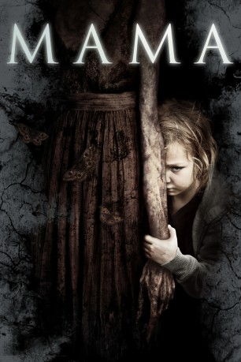

#7368 Mama
 
 IMDB-Wertung: 6.2 / 10
IMDB-Wertung: 6.2 / 10  Tomatometer: 65
Tomatometer: 65  Metascore: 0
Metascore: 0 
Fünf Jahre waren die jungen Nichten von Lucas verschwunden. Als sie in einer Waldhütte entdeckt werden, sind sie völlig verwildert, verängstigt und aggressiv. Lucas nimmt sich mit seiner Verlobten den zwei Mädchen an. Noch ahnt er nicht, dass deren Aussage, von einer Erscheinung, die sie "Mama" nennen, beschützt worden zu sein, kein Produkt einer traumatisierten Psyche ist. "Mama" existiert, bleibt auch im neuen Heim der Mädchen präsent und reagiert auf jede Störung der Mutter-Kind-Beziehung mit tödlicher Konsequenz.
Jahr: 2013
Dauer: 100 Minuten
FSK: 16
Land: Kanada Studio: UPITonspuren: DTS - ,
Untertitel: Deutsch,
Auflösung: 1080p (1920x1040) Größe: 5109 MB
Genre: Thriller, Horror
Regisseur: Andy Muschietti
Drehbuch: Andy Muschietti
Soundtrack:
Darsteller:
 Jessica Chastain als Annabel
Jessica Chastain als Annabel Nikolaj Coster-Waldau als Lucas / Jeffrey
Nikolaj Coster-Waldau als Lucas / Jeffrey Megan Charpentier als Victoria
Megan Charpentier als Victoria Isabelle Nélisse als Lilly
Isabelle Nélisse als Lilly Daniel Kash als Dr. Dreyfuss
Daniel Kash als Dr. Dreyfuss Javier Botet als Mama
Javier Botet als Mama- Jane Moffat als Jean Podolski / Mama, Voice
- Morgan McGarry als Young Victoria
- Julia Chantrey als Nina
- Ray Kahnert als Judge
- Matthew Edison als Young Cop
- Hannah Cheesman als Beautiful Mama / Skinny Woman
- Chrys Hobbs als Nun 2
 Melina Matthews als Mama
Melina Matthews als Mama- Jayden Greig als Orphaned Boy , uncredited
 David Fox als Burnsie
David Fox als Burnsie- Dominic Cuzzocrea als Ron
- Christopher Marren als Cop
- Diane Gordon als Louise
- Maya Dawe als Young Lilly
- Sierra Dawe als Young Lilly
- Nick Hall als Annabel's Bandmate
- Joey Proulx als Annabel's Bandmate
- Elva Mai Hoover als Dr. Dreyfuss' Secretary
- Pamela Farrauto als Nun
- Laura Guiteras als Mama
- Tyler Curnew als Orphaned Boy #2 , uncredited
- Kevin Kirkham als Lawyer for Jean Podolski , uncredited
Datei: X:\2013(I-M)\Mama (2013, FSK16, 1920x1040).mkv seit 20.10.2017
Festplatte: HD 2013(I-Z)-2014(A-Z)
 Es gibt insgesamt 89 Filme in der Gruppe '2013(I-M)'
Es gibt insgesamt 89 Filme in der Gruppe '2013(I-M)'